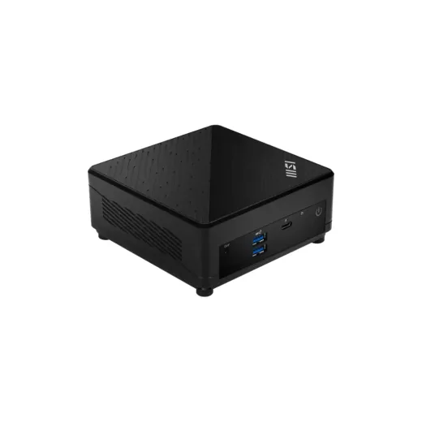
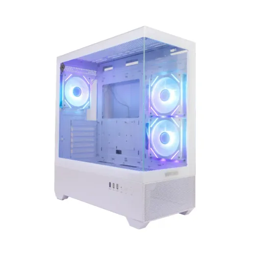
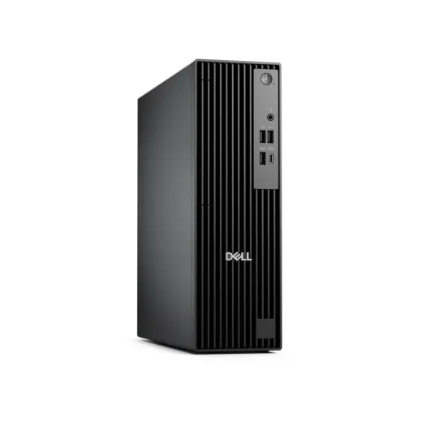
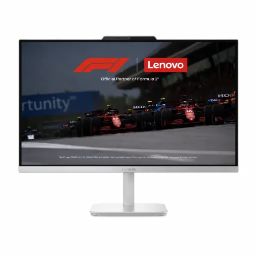
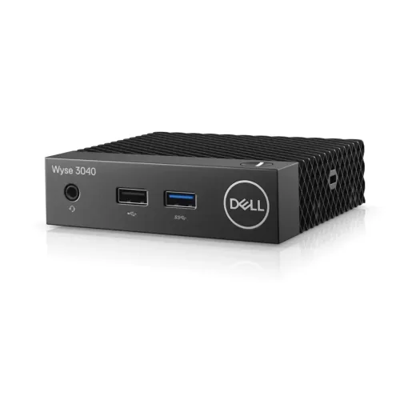
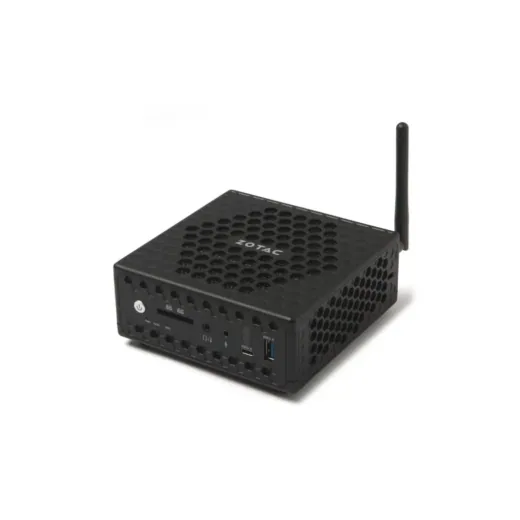
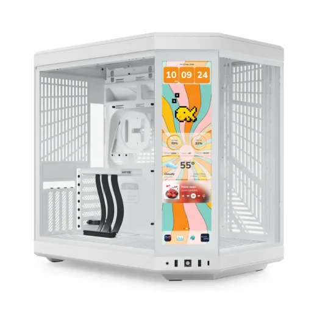
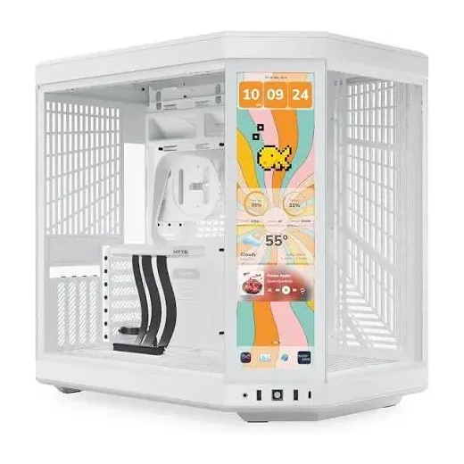

Inicio › Computadoras de escritorio
Computadoras de escritorio: precios en Honduras y dónde comprar más barato
9 productos de 2 tiendas, con el precio de cada una. Actualizado el 14 de noviembre de 2026.
Computadoras de escritorio Computadora

Computadora de Escritorio Mini MSI Cubi 5Desde L 23,5002 versiones · 1 tienda
Computadora de Escritorio Vorttek GlacierSteel Gaming · Intel Core i5-14400 · 16GB RAM · SSD 1TB · W11 ProL 26,995En Sycom
Computadora de Escritorio Dell Pro Slim QCS1250 · Intel Core i5-14500 · 8GB RAM · SSD 512GB · W11 Pro PJ4F4L 31,800En Sycom
Computadora All-in-One Lenovo A100 CI3 8GB RAM + 512GB SSD 23.8" FHD Windows 11L 15,999En Lady Lee
Computadora de Escritorio Dell WYSE 3040 Thin Client · Atom X5 Z8350 · 2GB RAM · 8GB Flash · ThinOS 8.4L 12,400En Sycom
Computadora de Escritorio Mini Zbox Nano CI325 · Intel Celeron N3160 · 4GB RAM · 32GB SSD · W10 HomeL 10,499.99En Sycom
Computadora de Escritorio HYTE Y70 Touch Infinite · Ryzen 7 5700G · 32GB RAM · SSD 1TB · 8GB RTX 5060Ti GDDR7 GIGABYTE · W11 ProL 63,500En Sycom
Computadora de Escritorio HYTE Y70 Ultra 7-265K · 32GB DDR5 5600 · SSD M.2 1TB · 750W Bronze · RTX 5060 8GB · Windows 11 ProL 84,995.01En Sycom
Preguntas frecuentes
¿Dónde están más baratos los computadoras de escritorio en Honduras?
Revisa cada producto: mostramos el precio en cada tienda.
¿Cuánto cuestan los computadoras de escritorio en Honduras?
Desde L 10,499.99. Comparamos 9 productos de 2 tiendas.
¿Qué tiendas comparan?
Sycom, Lady Lee.